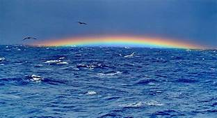
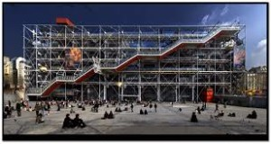

WorldTopper
Top of Everything............
☞Bermuda Triangle
Bermuda Triangle, section of the North Atlantic Ocean off North America in which more than 50 ships and 20 airplanes are said to have mysteriously disappeared. The area, whose boundaries are not universally agreed upon, has a vaguely triangular shape marked by the Atlantic coast of the Florida panhandle (in the United States), Bermuda, and the Greater Antilles.The Bermuda Triangle, also known as the Devil's Triangle or Hurricane Alley, is a loosely defined region in the western part of the North Atlantic Ocean where a number of aircraft and ships are said to have disappeared under mysterious circumstances. Most reputable sources dismiss the idea that there is any mystery.
The Gaddis Argosy article delineated the boundaries of the triangle,[7] giving its vertices as Miami; San Juan, Puerto Rico; and Bermuda. Subsequent writers did not necessarily follow this definition.[13] Some writers gave different boundaries and vertices to the triangle, with the total area varying from 1,300,000 to 3,900,000 km2 (500,000 to 1,510,000 sq mi).[13] "Indeed, some writers even stretch it as far as the Irish coast."[14] Consequently, the determination of which accidents occurred inside the triangle depends on which writer reported them.[13] Reports of unexplained occurrences in the region date to the mid-19th century. Some ships were discovered completely abandoned for no apparent reason; others transmitted no distress signals and were never seen or heard from again. Aircraft have been reported and then vanished, and rescue missions are said to have vanished when flying in the area. However, wreckage has not been found, and some of the theories advanced to explain the repeated mysteries have been fanciful. Although theories of supernatural causes for these disappearances abound, geophysical and environmental factors are most likely responsible. One hypothesis is that pilots failed to account for the agonic line—the place at which there is no need to compensate for magnetic compass variation—as they approached the Bermuda Triangle, resulting in significant navigational error and catastrophe. Another popular theory is that the missing vessels were felled by so-called “rogue waves,” which are massive waves that can reach heights of up to 100 feet (30.5 metres) and would theoretically be powerful enough to destroy all evidence of a ship or airplane. The Bermuda Triangle is located in an area of the Atlantic Ocean where storms from multiple directions can converge, making rogue waves more likely to occur.
☞Transit Of Mercury
A transit of Mercury across the Sun takes place when the planet Mercury comes between the Sun and the Earth, and Mercury is seen as a small black dot moving across the face of the Sun.Mercury is a physically small planet, only three thousand miles in diameter, compared to Earth’s almost eight thousand. During the transit, Mercury will be visible as a tiny dot near the Sun’s northern edge. The planet will be ten seconds of arc in diameter, only one-half of one percent of the solar disc. This tiny size will require substantial magnification to see the Mercury’s disc against the Sun. A two-inch-diameter telescope is probably the minimum required to see the transit..
A transit of Mercury across the Sun takes place when the planet Mercury passes directly (transits) between the Sun and a superior planet, becoming visible against (and hence obscuring a small portion of) the solar disk. During a transit, Mercury appears as a tiny black dot moving across the disk of the Sun.Transits of Mercury with respect to Earth are much more frequent than transits of Venus, with about 13 or 14 per century, in part because Mercury is closer to the Sun and orbits it more rapidly.Transits of Mercury occur in May or November. The last four transits occurred on May 7, 2003; November 8, 2006; May 9, 2016; and November 11, 2019. The next will occur on November 13, 2032. A typical transit lasts several hours.On June 3, 2014, the Mars rover Curiosity observed the planet Mercury transiting the Sun, marking the first time a planetary transit has been observed from a celestial body besides Earth.[1]
.jpg) Here i have given the regions of visibility and invisibility of the May 9 transit. The cloud dataset is extracted from polar-satellite images acquired between 1982 and 2009 and compiled as part of the Patmos-x project. “Cloud” is a difficult parameter to measure, as it can be thin or thick, water or ice, and often composed of elements too small to register in the satellite image. The determination of whether a scene is cloudy or not is a process that is fraught with measurement biases, and so the map below should be used as an indication of the relative cloudiness of a region rather than the absolute probability of seeing the transit.In North America, the best weather occurs over the southwestern deserts of the USA and adjoining parts of coastal Mexico. Sunshine favours the Mediterranean coast of Europe and both the northern and southern thirds of Africa, though only the western Sahara is located to see the entire transit. It should come as no surprise that all of the best-situated regions are near or within the Earth’s great deserts, except for the cloud-free weather atop the Greenland icecap.
Here i have given the regions of visibility and invisibility of the May 9 transit. The cloud dataset is extracted from polar-satellite images acquired between 1982 and 2009 and compiled as part of the Patmos-x project. “Cloud” is a difficult parameter to measure, as it can be thin or thick, water or ice, and often composed of elements too small to register in the satellite image. The determination of whether a scene is cloudy or not is a process that is fraught with measurement biases, and so the map below should be used as an indication of the relative cloudiness of a region rather than the absolute probability of seeing the transit.In North America, the best weather occurs over the southwestern deserts of the USA and adjoining parts of coastal Mexico. Sunshine favours the Mediterranean coast of Europe and both the northern and southern thirds of Africa, though only the western Sahara is located to see the entire transit. It should come as no surprise that all of the best-situated regions are near or within the Earth’s great deserts, except for the cloud-free weather atop the Greenland icecap.
☞Mount Everest
Mount Everest, is the first highest mountain in the world. Mount Everest is the place of attractions so many highly experienced mountaineers as well as capable climbers willing to hire professional guides. The first recorded efforts to reach Everest’s summit were made by British mountaineers.The current official elevation of 8,848 m (29,029 ft), recognised by China and Nepal, was established by a 1955 Indian survey and subsequently confirmed by a Chinese survey in 1975.[1]In 1865, Everest was given its official English name by the Royal Geographical Society, as recommended by Andrew Waugh, the British Surveyor General of India, who chose the name of his predecessor in the post, Sir George Everest, despite Everest's objections.[6]
In 1802, the British began the Great Trigonometric Survey of India to fix the locations, heights, and names of the world's highest mountains. Starting in southern India, the survey teams moved northward using giant theodolites, each weighing 500 kg (1,100 lb) and requiring 12 men to carry, to measure heights as accurately as possible. They reached the Himalayan foothills by the 1830s, but Nepal was unwilling to allow the British to enter the country due to suspicions of political aggression and possible annexation. Several requests by the surveyors to enter Nepal were turned down.[19]The British were forced to continue their observations from Terai, a region south of Nepal which is parallel to the Himalayas. Conditions in Terai were difficult because of torrential rains and malaria. Three survey officers died from malaria while two others had to retire because of failing health.[19]Nonetheless, in 1847, the British continued the survey and began detailed observations of the Himalayan peaks from observation stations up to 240 km (150 mi) distant..jpg) Weather restricted work to the last three months of the year. In November 1847, Andrew Waugh, the British Surveyor General of India made several observations from the Sawajpore station at the east end of the Himalayas. Kangchenjunga was then considered the highest peak in the world, and with interest, he noted a peak beyond it, about 230 km (140 mi) away. John Armstrong, one of Waugh's subordinates, also saw the peak from a site farther west and called it peak "b". Waugh would later write that the observations indicated that peak "b" was higher than Kangchenjunga, but given the great distance of the observations, closer observations were required for verification. The following year, Waugh sent a survey official back to Terai to make closer observations of peak "b", but clouds thwarted his attempts.[19]
Weather restricted work to the last three months of the year. In November 1847, Andrew Waugh, the British Surveyor General of India made several observations from the Sawajpore station at the east end of the Himalayas. Kangchenjunga was then considered the highest peak in the world, and with interest, he noted a peak beyond it, about 230 km (140 mi) away. John Armstrong, one of Waugh's subordinates, also saw the peak from a site farther west and called it peak "b". Waugh would later write that the observations indicated that peak "b" was higher than Kangchenjunga, but given the great distance of the observations, closer observations were required for verification. The following year, Waugh sent a survey official back to Terai to make closer observations of peak "b", but clouds thwarted his attempts.[19]
☞Burj Khalifa
The Burj Khalifa (Arabic: ??? ??????, Arabic pronunciation: [b?rd?? xa'li?fa]; pronounced English: /'b??rd? k?'li?f?/), known as the Burj Dubai prior to its inauguration in 2010, is a skyscraper in Dubai, United Arab Emirates. With a total height of 829.8 m (2,722 ft) and a roof height (excluding antenna, but including a 244 m spire[2]) of 828 m (2,717 ft), the Burj Khalifa has been the tallest structure and building in the world since its topping out in 2009.[3][4]
Records
- Tallest structure ever built: 829.8 m (2,722 ft) (previously Warsaw radio mast – 646.38 m or 2,121 ft)
- Tallest freestanding structure: 829.8 m (2,722 ft) (previously CN Tower – 553.3 m or 1,815 ft)
- Tallest skyscraper (to top of spire): 828 m (2,717 ft) (previously Taipei 101 – 509.2 m or 1,671 ft)[19]
- Tallest skyscraper to top of antenna: 829.8 m (2,722 ft) (previously the Willis (formerly Sears) Tower – 527 m or 1,729 ft)
- World's highest installation of an aluminium and glass façade: 512 m (1,680 ft)[25]
- World's longest travel distance elevators: 504 m (1,654 ft)[21][22]
- Highest vertical concrete pumping (for a building): 606 m (1,988 ft)[23]
☞The British Museum
The British Museum is a museum dedicated to human history, art, and culture, located in the Bloomsbury area of London. Its permanent collection, numbering some 8 million works, is among the largest and most comprehensive in existence and originates from all continents, illustrating and documenting the story of human culture from its beginnings to the present.The British Museum was established in 1753, largely based on the collections of the physician and scientist Sir Hans Sloane. The museum first opened to the public on 15 January 1759, in Montagu House in Bloomsbury, on the site of the current museum building. Its expansion over the following two and a half centuries was largely a result of an expanding British colonial footprint and has resulted in the creation of several branch institutions, the first being the British Museum (Natural History) in South Kensington in 1881. Some objects in the collection, most notably the Elgin Marbles from the Parthenon, are the objects of controversy and of calls for restitution to their countries of origin.
 The British Museum was established in 1753, largely based on the collections of the Irish physician and scientist Sir Hans Sloane.[5] It first opened to the public in 1759, in Montagu House, on the site of the current building. Its expansion over the following 250 years was largely a result of expanding British colonisation and has resulted in the creation of several branch institutions, the first being the Natural History Museum in 1881.In 1973, the British Library Act 1972 detached the library department from the British Museum, but it continued to host the now separated British Library in the same Reading Room and building as the museum until 1997. The museum is a non-departmental public body sponsored by the Department for Digital, Culture, Media and Sport, and as with all national museums in the UK it charges no admission fee, except for loan exhibitions.[6]
Copyright © All rights reserved | This template is made with by SAIFULLA